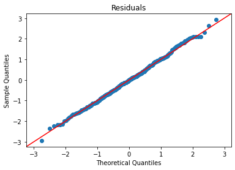
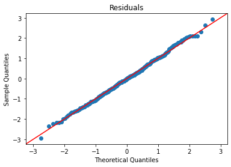

Regressions¶
This notebook demonstrates various regressions, and accompanies the videos in Week 8.
Setup¶
We’re going to import our modules. Of particular note is statsmodels.formula.api, which gives us the regression APIs.
import pandas as pd
import numpy as np
import matplotlib.pyplot as plt
import seaborn as sns
import scipy.stats as sps
import statsmodels.api as sm
import statsmodels.formula.api as smf
We’re going to use the Penguins data:
penguins = pd.read_csv('../data/penguins.csv')
penguins.head()
| species | island | bill_length_mm | bill_depth_mm | flipper_length_mm | body_mass_g | sex | year | |
|---|---|---|---|---|---|---|---|---|
| 0 | Adelie | Torgersen | 39.1 | 18.7 | 181.0 | 3750.0 | male | 2007 |
| 1 | Adelie | Torgersen | 39.5 | 17.4 | 186.0 | 3800.0 | female | 2007 |
| 2 | Adelie | Torgersen | 40.3 | 18.0 | 195.0 | 3250.0 | female | 2007 |
| 3 | Adelie | Torgersen | NaN | NaN | NaN | NaN | NaN | 2007 |
| 4 | Adelie | Torgersen | 36.7 | 19.3 | 193.0 | 3450.0 | female | 2007 |
I’m also going to create a utility function for plotting lines:
def plot_line(intercept, slope, xmin, xmax, **kwargs):
xs = np.linspace(xmin, xmax, 100)
ys = intercept + slope * xs
plt.plot(xs, ys, **kwargs)
Explore Correlations¶
The Seaborn pairplot function shows a scatterplot matrix, allowing us to view possible correlations:
sns.pairplot(penguins[['species', 'sex', 'bill_length_mm', 'bill_depth_mm', 'flipper_length_mm', 'body_mass_g']], hue='species')
plt.show()
Let’s also look at the distribution of sex and species, to see if we have sex imbalances between species:
sns.countplot(x='species', hue='sex', data=penguins)
<AxesSubplot:xlabel='species', ylabel='count'>
Nope!
Now a correlation matrix between our various numeric variables:
penguins.drop(columns=['year']).corr()
| bill_length_mm | bill_depth_mm | flipper_length_mm | body_mass_g | |
|---|---|---|---|---|
| bill_length_mm | 1.000000 | -0.235053 | 0.656181 | 0.595110 |
| bill_depth_mm | -0.235053 | 1.000000 | -0.583851 | -0.471916 |
| flipper_length_mm | 0.656181 | -0.583851 | 1.000000 | 0.871202 |
| body_mass_g | 0.595110 | -0.471916 | 0.871202 | 1.000000 |
The .corr method on a data frame will compute correlations between all pairs of numeric variables, and show them in a table. The diagonal is 1, because a variable is always correlated with itself.
Dummy Variable Demo¶
Here’s the code that demonstrates dummy-coding from the Categorical Predictors lecture:
pd.get_dummies(penguins['species'])
| Adelie | Chinstrap | Gentoo | |
|---|---|---|---|
| 0 | 1 | 0 | 0 |
| 1 | 1 | 0 | 0 |
| 2 | 1 | 0 | 0 |
| 3 | 1 | 0 | 0 |
| 4 | 1 | 0 | 0 |
| ... | ... | ... | ... |
| 339 | 0 | 1 | 0 |
| 340 | 0 | 1 | 0 |
| 341 | 0 | 1 | 0 |
| 342 | 0 | 1 | 0 |
| 343 | 0 | 1 | 0 |
344 rows × 3 columns
And dropping the first level:
pd.get_dummies(penguins['species'], drop_first=True)
| Chinstrap | Gentoo | |
|---|---|---|
| 0 | 0 | 0 |
| 1 | 0 | 0 |
| 2 | 0 | 0 |
| 3 | 0 | 0 |
| 4 | 0 | 0 |
| ... | ... | ... |
| 339 | 1 | 0 |
| 340 | 1 | 0 |
| 341 | 1 | 0 |
| 342 | 1 | 0 |
| 343 | 1 | 0 |
344 rows × 2 columns
Flipper Regression¶
From the pair plot, the flipper length and body mass look like good candidates for regression. Let’s show them with a regplot:
sns.regplot(x='flipper_length_mm', y='body_mass_g', data=penguins, line_kws={'color': 'orange'})
plt.title('Body mass by flipper length')
plt.show()
Now we’re going to fit a linear regression.
The first step is to create the OLS model. This has two inputs:
The formula specifying the regression model (in this case, predicting body mass with flipper length)
The data to train the model on
Let’s do it:
bm_mod = smf.ols('body_mass_g ~ flipper_length_mm', data=penguins)
Once we have created the model, we need to fit it. The fit method will return an object containing the results of fitting the model, such as its paramters; it can be summarized with summary:
bmf = bm_mod.fit()
bmf.summary()
| Dep. Variable: | body_mass_g | R-squared: | 0.759 |
|---|---|---|---|
| Model: | OLS | Adj. R-squared: | 0.758 |
| Method: | Least Squares | F-statistic: | 1071. |
| Date: | Fri, 22 Oct 2021 | Prob (F-statistic): | 4.37e-107 |
| Time: | 15:29:50 | Log-Likelihood: | -2528.4 |
| No. Observations: | 342 | AIC: | 5061. |
| Df Residuals: | 340 | BIC: | 5069. |
| Df Model: | 1 | ||
| Covariance Type: | nonrobust |
| coef | std err | t | P>|t| | [0.025 | 0.975] | |
|---|---|---|---|---|---|---|
| Intercept | -5780.8314 | 305.815 | -18.903 | 0.000 | -6382.358 | -5179.305 |
| flipper_length_mm | 49.6856 | 1.518 | 32.722 | 0.000 | 46.699 | 52.672 |
| Omnibus: | 5.634 | Durbin-Watson: | 2.190 |
|---|---|---|---|
| Prob(Omnibus): | 0.060 | Jarque-Bera (JB): | 5.585 |
| Skew: | 0.313 | Prob(JB): | 0.0613 |
| Kurtosis: | 3.019 | Cond. No. | 2.89e+03 |
Notes:
[1] Standard Errors assume that the covariance matrix of the errors is correctly specified.
[2] The condition number is large, 2.89e+03. This might indicate that there are
strong multicollinearity or other numerical problems.
Now we need to check our residual assumptions. There are two plots to create:
Residuals vs. Fitted
Residual Q-Q
I’m going to create a function that plots them both:
def plot_lm_diag(fit):
"Plot linear fit diagnostics"
sns.regplot(x=fit.fittedvalues, y=fit.resid)
plt.xlabel('Fitted')
plt.ylabel('Residuals')
plt.title('Residuals vs. Fitted')
plt.show()
sm.qqplot(fit.resid, fit=True, line='45')
plt.title('Residuals')
plt.show()
And now use it:
plot_lm_diag(bmf)

Standardizing Variables¶
We can also standardize our variables before fitting a model. This converts variable values into z-scores, such that
Z-standardized (or z-normalized) variables have a mean of 0 and a standard deviation of 1 (and since \(1^2 = 1\), the variance is also 1). The result is that model coefficients are in units of standard deviations.
Let’s write a function to convert a series to its z-scores:
def zscore(xs):
xbar = xs.mean()
s = xs.std()
return (xs - xbar) / s
And create standardized versions of our variables:
penguin_std = pd.DataFrame({
'species': penguins['species'],
'sex': penguins['sex'],
'mass': zscore(penguins['body_mass_g']),
'flipper': zscore(penguins['flipper_length_mm']),
'bill_len': zscore(penguins['bill_length_mm']),
'bill_depth': zscore(penguins['bill_depth_mm'])
})
penguin_std
| species | sex | mass | flipper | bill_len | bill_depth | |
|---|---|---|---|---|---|---|
| 0 | Adelie | male | -0.563317 | -1.416272 | -0.883205 | 0.784300 |
| 1 | Adelie | female | -0.500969 | -1.060696 | -0.809939 | 0.126003 |
| 2 | Adelie | female | -1.186793 | -0.420660 | -0.663408 | 0.429833 |
| 3 | Adelie | NaN | NaN | NaN | NaN | NaN |
| 4 | Adelie | female | -0.937403 | -0.562890 | -1.322799 | 1.088129 |
| ... | ... | ... | ... | ... | ... | ... |
| 339 | Chinstrap | male | -0.251578 | 0.432721 | 2.175637 | 1.341320 |
| 340 | Chinstrap | female | -0.999750 | 0.077145 | -0.077282 | 0.480471 |
| 341 | Chinstrap | male | -0.532143 | -0.562890 | 1.040019 | 0.531109 |
| 342 | Chinstrap | male | -0.126883 | 0.646066 | 1.259816 | 0.936215 |
| 343 | Chinstrap | female | -0.532143 | -0.207315 | 1.149917 | 0.784300 |
344 rows × 6 columns
And now we’ll fit and describe a model using these:
bm_mod = smf.ols('mass ~ flipper', data=penguin_std)
bmf = bm_mod.fit()
bmf.summary()
| Dep. Variable: | mass | R-squared: | 0.759 |
|---|---|---|---|
| Model: | OLS | Adj. R-squared: | 0.758 |
| Method: | Least Squares | F-statistic: | 1071. |
| Date: | Fri, 22 Oct 2021 | Prob (F-statistic): | 4.37e-107 |
| Time: | 15:29:51 | Log-Likelihood: | -241.46 |
| No. Observations: | 342 | AIC: | 486.9 |
| Df Residuals: | 340 | BIC: | 494.6 |
| Df Model: | 1 | ||
| Covariance Type: | nonrobust |
| coef | std err | t | P>|t| | [0.025 | 0.975] | |
|---|---|---|---|---|---|---|
| Intercept | 1.75e-16 | 0.027 | 6.58e-15 | 1.000 | -0.052 | 0.052 |
| flipper | 0.8712 | 0.027 | 32.722 | 0.000 | 0.819 | 0.924 |
| Omnibus: | 5.634 | Durbin-Watson: | 2.190 |
|---|---|---|---|
| Prob(Omnibus): | 0.060 | Jarque-Bera (JB): | 5.585 |
| Skew: | 0.313 | Prob(JB): | 0.0613 |
| Kurtosis: | 3.019 | Cond. No. | 1.00 |
Notes:
[1] Standard Errors assume that the covariance matrix of the errors is correctly specified.
The residual plots will be identical to the unstandardized model, except for the scales of the axes, because all we did was rescale and recenter the variables:
plot_lm_diag(bmf)
Mass and Bill Length¶
Let’s do a regression we don’t expect to work well: mass vs. bill length.
First, we’ll fit the regression:
bm_mod = smf.ols('mass ~ bill_len', data=penguin_std)
bmf = bm_mod.fit()
bmf.summary()
| Dep. Variable: | mass | R-squared: | 0.354 |
|---|---|---|---|
| Model: | OLS | Adj. R-squared: | 0.352 |
| Method: | Least Squares | F-statistic: | 186.4 |
| Date: | Fri, 22 Oct 2021 | Prob (F-statistic): | 3.81e-34 |
| Time: | 15:29:51 | Log-Likelihood: | -410.02 |
| No. Observations: | 342 | AIC: | 824.0 |
| Df Residuals: | 340 | BIC: | 831.7 |
| Df Model: | 1 | ||
| Covariance Type: | nonrobust |
| coef | std err | t | P>|t| | [0.025 | 0.975] | |
|---|---|---|---|---|---|---|
| Intercept | 1.75e-16 | 0.044 | 4.02e-15 | 1.000 | -0.086 | 0.086 |
| bill_len | 0.5951 | 0.044 | 13.654 | 0.000 | 0.509 | 0.681 |
| Omnibus: | 5.671 | Durbin-Watson: | 0.866 |
|---|---|---|---|
| Prob(Omnibus): | 0.059 | Jarque-Bera (JB): | 4.857 |
| Skew: | -0.211 | Prob(JB): | 0.0882 |
| Kurtosis: | 2.597 | Cond. No. | 1.00 |
Notes:
[1] Standard Errors assume that the covariance matrix of the errors is correctly specified.
\(R^2\) is much lower than the previous models, indicating this model explains much less of the variance.
Let’s look at our diagnostic plots:
plot_lm_diag(bmf)
There’s some noticable non-normality at the tails of the residuals, but it isn’t bad. The residuals, however, exhibit notable heteroskedasticity,.
Multivariate Regression¶
This section goes with the Multiple Regression video.
Per-Species Intercepts¶
Let’s add the species as a predictor, so we have per-species intercepts for the variable:
bm_mod = smf.ols('mass ~ flipper + species', data=penguin_std)
bmf = bm_mod.fit()
bmf.summary()
| Dep. Variable: | mass | R-squared: | 0.783 |
|---|---|---|---|
| Model: | OLS | Adj. R-squared: | 0.781 |
| Method: | Least Squares | F-statistic: | 405.7 |
| Date: | Fri, 22 Oct 2021 | Prob (F-statistic): | 1.25e-111 |
| Time: | 15:29:51 | Log-Likelihood: | -223.79 |
| No. Observations: | 342 | AIC: | 455.6 |
| Df Residuals: | 338 | BIC: | 470.9 |
| Df Model: | 3 | ||
| Covariance Type: | nonrobust |
| coef | std err | t | P>|t| | [0.025 | 0.975] | |
|---|---|---|---|---|---|---|
| Intercept | -0.0685 | 0.057 | -1.207 | 0.228 | -0.180 | 0.043 |
| species[T.Chinstrap] | -0.2575 | 0.072 | -3.577 | 0.000 | -0.399 | -0.116 |
| species[T.Gentoo] | 0.3327 | 0.119 | 2.801 | 0.005 | 0.099 | 0.566 |
| flipper | 0.7137 | 0.054 | 13.255 | 0.000 | 0.608 | 0.820 |
| Omnibus: | 3.390 | Durbin-Watson: | 2.556 |
|---|---|---|---|
| Prob(Omnibus): | 0.184 | Jarque-Bera (JB): | 3.397 |
| Skew: | 0.242 | Prob(JB): | 0.183 |
| Kurtosis: | 2.934 | Cond. No. | 6.47 |
Notes:
[1] Standard Errors assume that the covariance matrix of the errors is correctly specified.
Species is automatically dummy-coded with the first level dropped. We therefore get the following intercepts:
Adelie:
InterceptChinstrap:
Intercept + species[T.Chinstrap]Gentoo:
Intercept + species[T.Gentoo]
Let’s check fit:
plot_lm_diag(bmf)
And we’ll plot the different lines on top of a scatterplot:
sns.scatterplot(x='flipper', y='mass', hue='species', data=penguin_std)
plot_line(bmf.params['Intercept'], bmf.params['flipper'], -2, 2, label='Adelie')
plot_line(bmf.params['Intercept'] + bmf.params['species[T.Gentoo]'],
bmf.params['flipper'],
-2, 2, label='Gentoo')
plot_line(bmf.params['Intercept'] + bmf.params['species[T.Chinstrap]'],
bmf.params['flipper'],
-2, 2, label='Chinstrap')
plt.title('Species-specific intercepts')
plt.show()
Per-Species Slopes and Intercepts¶
Now let’s add an interaction term between flipper and species.
We do this with flipper * species, which expands to flipper + species + flipper:species:
bm_mod = smf.ols('mass ~ flipper * species', data=penguin_std)
bmf = bm_mod.fit()
bmf.summary()
| Dep. Variable: | mass | R-squared: | 0.790 |
|---|---|---|---|
| Model: | OLS | Adj. R-squared: | 0.786 |
| Method: | Least Squares | F-statistic: | 252.2 |
| Date: | Fri, 22 Oct 2021 | Prob (F-statistic): | 2.22e-111 |
| Time: | 15:29:52 | Log-Likelihood: | -218.25 |
| No. Observations: | 342 | AIC: | 448.5 |
| Df Residuals: | 336 | BIC: | 471.5 |
| Df Model: | 5 | ||
| Covariance Type: | nonrobust |
| coef | std err | t | P>|t| | [0.025 | 0.975] | |
|---|---|---|---|---|---|---|
| Intercept | -0.1761 | 0.074 | -2.393 | 0.017 | -0.321 | -0.031 |
| species[T.Chinstrap] | -0.1888 | 0.101 | -1.871 | 0.062 | -0.387 | 0.010 |
| species[T.Gentoo] | 0.1579 | 0.135 | 1.172 | 0.242 | -0.107 | 0.423 |
| flipper | 0.5757 | 0.081 | 7.095 | 0.000 | 0.416 | 0.735 |
| flipper:species[T.Chinstrap] | 0.0305 | 0.138 | 0.222 | 0.825 | -0.240 | 0.301 |
| flipper:species[T.Gentoo] | 0.3821 | 0.122 | 3.139 | 0.002 | 0.143 | 0.621 |
| Omnibus: | 5.822 | Durbin-Watson: | 2.534 |
|---|---|---|---|
| Prob(Omnibus): | 0.054 | Jarque-Bera (JB): | 5.758 |
| Skew: | 0.317 | Prob(JB): | 0.0562 |
| Kurtosis: | 3.034 | Cond. No. | 10.8 |
Notes:
[1] Standard Errors assume that the covariance matrix of the errors is correctly specified.
AIC is improving slightly, not a lot.
Look at assumption checks:
plot_lm_diag(bmf)
Getting better, but still some curve on the Q-Q and doesn’t quite look homoskedastic. (Watch the video for more explanation.)
Let’s plot these different lines:
sns.scatterplot(x='flipper', y='mass', hue='species', data=penguin_std)
plot_line(bmf.params['Intercept'], bmf.params['flipper'], -2, 2, label='Adelie')
plot_line(bmf.params['Intercept'] + bmf.params['species[T.Gentoo]'],
bmf.params['flipper'] + bmf.params['flipper:species[T.Gentoo]'],
-2, 2, label='Gentoo')
plot_line(bmf.params['Intercept'] + bmf.params['species[T.Chinstrap]'],
bmf.params['flipper'] + bmf.params['flipper:species[T.Chinstrap]'],
-2, 2, label='Chinstrap')
plt.title('Models with per-species slopes and intercepts')
plt.show()
Sexual Dimorphism¶
Now let’s look at penguin sex as a predictor, and we’ll keep the flipper:species interaction:
bm_mod = smf.ols('mass ~ flipper + species * sex + flipper:species', data=penguin_std)
bmf = bm_mod.fit()
bmf.summary()
| Dep. Variable: | mass | R-squared: | 0.876 |
|---|---|---|---|
| Model: | OLS | Adj. R-squared: | 0.873 |
| Method: | Least Squares | F-statistic: | 285.9 |
| Date: | Fri, 22 Oct 2021 | Prob (F-statistic): | 7.40e-142 |
| Time: | 15:29:52 | Log-Likelihood: | -125.89 |
| No. Observations: | 333 | AIC: | 269.8 |
| Df Residuals: | 324 | BIC: | 304.0 |
| Df Model: | 8 | ||
| Covariance Type: | nonrobust |
| coef | std err | t | P>|t| | [0.025 | 0.975] | |
|---|---|---|---|---|---|---|
| Intercept | -0.7717 | 0.076 | -10.090 | 0.000 | -0.922 | -0.621 |
| species[T.Chinstrap] | 0.2359 | 0.120 | 1.968 | 0.050 | 3.11e-05 | 0.472 |
| species[T.Gentoo] | 1.0222 | 0.120 | 8.509 | 0.000 | 0.786 | 1.259 |
| sex[T.male] | 0.7474 | 0.063 | 11.790 | 0.000 | 0.623 | 0.872 |
| species[T.Chinstrap]:sex[T.male] | -0.5059 | 0.124 | -4.086 | 0.000 | -0.749 | -0.262 |
| species[T.Gentoo]:sex[T.male] | -0.0023 | 0.109 | -0.021 | 0.983 | -0.217 | 0.212 |
| flipper | 0.2861 | 0.069 | 4.172 | 0.000 | 0.151 | 0.421 |
| flipper:species[T.Chinstrap] | 0.1817 | 0.126 | 1.442 | 0.150 | -0.066 | 0.429 |
| flipper:species[T.Gentoo] | 0.1260 | 0.117 | 1.074 | 0.284 | -0.105 | 0.357 |
| Omnibus: | 0.719 | Durbin-Watson: | 2.050 |
|---|---|---|---|
| Prob(Omnibus): | 0.698 | Jarque-Bera (JB): | 0.836 |
| Skew: | 0.083 | Prob(JB): | 0.658 |
| Kurtosis: | 2.819 | Cond. No. | 16.2 |
Notes:
[1] Standard Errors assume that the covariance matrix of the errors is correctly specified.
This is good, but some non-significant relationships. In particular, the flipper/species interaction disappeared.
Assumption checks:
plot_lm_diag(bmf)
 

That is looking pretty good.
Drop interaction, due to non-significant coefficients:
bm_mod = smf.ols('mass ~ flipper + species * sex', data=penguin_std)
bmf = bm_mod.fit()
bmf.summary()
| Dep. Variable: | mass | R-squared: | 0.875 |
|---|---|---|---|
| Model: | OLS | Adj. R-squared: | 0.873 |
| Method: | Least Squares | F-statistic: | 380.2 |
| Date: | Fri, 22 Oct 2021 | Prob (F-statistic): | 6.74e-144 |
| Time: | 15:29:53 | Log-Likelihood: | -127.17 |
| No. Observations: | 333 | AIC: | 268.3 |
| Df Residuals: | 326 | BIC: | 295.0 |
| Df Model: | 6 | ||
| Covariance Type: | nonrobust |
| coef | std err | t | P>|t| | [0.025 | 0.975] | |
|---|---|---|---|---|---|---|
| Intercept | -0.7034 | 0.062 | -11.305 | 0.000 | -0.826 | -0.581 |
| species[T.Chinstrap] | 0.0968 | 0.076 | 1.280 | 0.202 | -0.052 | 0.246 |
| species[T.Gentoo] | 0.9982 | 0.108 | 9.273 | 0.000 | 0.786 | 1.210 |
| sex[T.male] | 0.7233 | 0.061 | 11.767 | 0.000 | 0.602 | 0.844 |
| species[T.Chinstrap]:sex[T.male] | -0.4188 | 0.106 | -3.953 | 0.000 | -0.627 | -0.210 |
| species[T.Gentoo]:sex[T.male] | 0.0549 | 0.090 | 0.612 | 0.541 | -0.122 | 0.231 |
| flipper | 0.3592 | 0.049 | 7.291 | 0.000 | 0.262 | 0.456 |
| Omnibus: | 0.476 | Durbin-Watson: | 2.046 |
|---|---|---|---|
| Prob(Omnibus): | 0.788 | Jarque-Bera (JB): | 0.596 |
| Skew: | 0.069 | Prob(JB): | 0.742 |
| Kurtosis: | 2.845 | Cond. No. | 9.89 |
Notes:
[1] Standard Errors assume that the covariance matrix of the errors is correctly specified.
This is definitely the best AIC we’ve seen. Let’s look at those assumption check plots:
plot_lm_diag(bmf)
That looks quite good.
Bootstrap¶
Now let’s bootstrap some of these model parameters. We’ll start with a function that will compute bootstrap samples of the rows of a data frame, and pass them to a function to get a statistic:
def boot_rows(df, stat, nboot=10000):
n = len(df)
obs = stat(df)
boots = [stat(df.sample(n=n, replace=True)) for i in range(nboot)]
return obs, np.quantile(boots, [0.025, 0.975])
Now we’ll write a function to train our full OLS model, and return the flipper length coefficient:
def flipper_coefficient(df):
bm_mod = smf.ols('mass ~ flipper + species * sex', data=df)
bmf = bm_mod.fit()
return bmf.params['flipper']
And we’ll bootstrap the flipper length coefficient:
boot_rows(penguin_std, flipper_coefficient, nboot=1000)
(0.3592089725886189, array([0.26818419, 0.45622605]))
That matches the CIs from the model itself pretty closely!
Simultaneous Bootstrap of Multiple Parameters¶
In the video, I said you could do this. Here’s the code.
First, we need a boot_rows function that can deal with the stat function returning a series of multiple statistics:
def boot_rows(df, stat, nboot=10000):
n = len(df)
obs = stat(df)
boots = [stat(df.sample(n=n, replace=True)) for i in range(nboot)]
if isinstance(obs, pd.Series):
# we have multiple statistics - stack them into a frame
boots = pd.DataFrame.from_records(boots)
# compute confidence intervals - columns will be params, and rows CI bounds
conf = boots.quantile([0.025, 0.975])
# transpose will put the params on rows
# join with frame-ified version of the original observations
return obs.to_frame('value').join(conf.transpose())
else:
return obs, np.quantile(boots, [0.025, 0.975])
And a function to return the parameters from a trained model:
def flipper_params(df):
bm_mod = smf.ols('mass ~ flipper + species * sex', data=df)
bmf = bm_mod.fit()
return bmf.params
And let’s bootstrap all of this:
boot_rows(penguin_std, flipper_params, nboot=1000)
| value | 0.025 | 0.975 | |
|---|---|---|---|
| Intercept | -0.703441 | -0.816331 | -0.593793 |
| species[T.Chinstrap] | 0.096813 | -0.040241 | 0.229157 |
| species[T.Gentoo] | 0.998247 | 0.808552 | 1.206571 |
| sex[T.male] | 0.723339 | 0.613021 | 0.847359 |
| species[T.Chinstrap]:sex[T.male] | -0.418757 | -0.625197 | -0.216513 |
| species[T.Gentoo]:sex[T.male] | 0.054908 | -0.113788 | 0.221861 |
| flipper | 0.359209 | 0.265790 | 0.448324 |